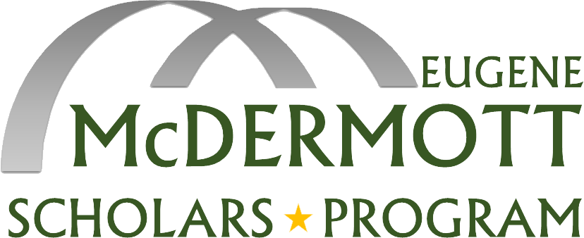

McDermott Network
A finalist weekend feedback application that evolved into a McDermott program information directory. The source code can be found here on Github.


My Resume
Describes my education, technical skills, and past work. I'm always willing to consider new career and project opportunities.

Minecraft U
A startup in Dallas, we produce critical thinking and programming curriculum using Minecraft. Our free, open-source curriculum can be found here on Github.

The McDermott Blog
A blog written by current students in my scholarship program during college. The (usually) weekly blog showcases the experiences facilitated by the program.